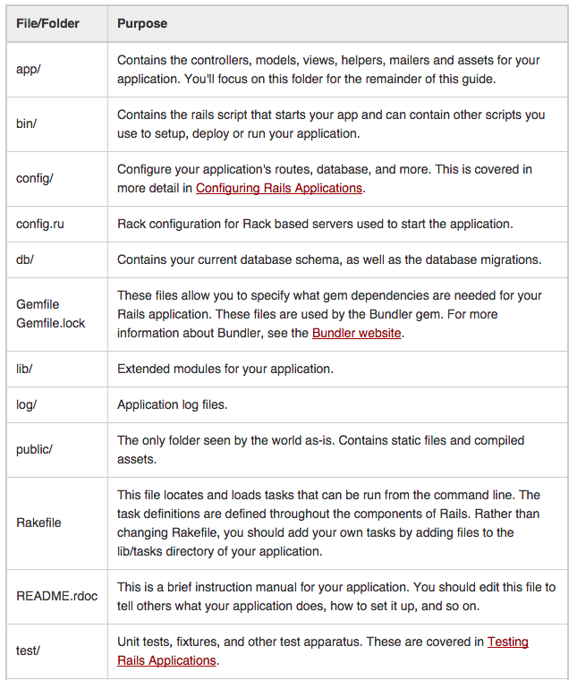
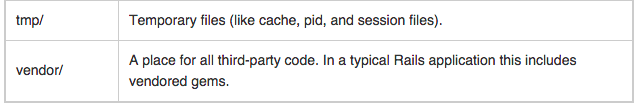

Rails is a web application development framework written in the Ruby language. It is designed to make programming web applications easier by making assumptions about what every developer needs to get started. It allows you to write less code while accomplishing more than many other languages and frameworks. Experienced Rails developers also report that it makes web application development more fun.
Rails is opinionated software. It makes the assumption that there is the "best" way to do things, and it's designed to encourage that way - and in some cases to discourage alternatives. If you learn "The Rails Way" you'll probably discover a tremendous increase in productivity. If you persist in bringing old habits from other languages to your Rails development, and trying to use patterns you learned elsewhere, you may have a less happy experience.
Rails is built around the model-view-controller pattern. It’s a simple concept: separate the data, logic, and display layers of your program. This lets you split functionality cleanly, just like having separate HTML, CSS and Javascript files prevents your code from mushing together. Here’s the MVC breakdown:
Models are classes that talk to the databse. You find, create and save models, so you don’t (usually) have to write SQL. Rails has a class to handle the magic of saving to a database when a model is updated.
Controllers take user input (like a URL) and decide what to do (show a page, order an item, post a comment). They may initially have business logic, like finding the right models or changing data. As your rails ninjitsu improves, constantly refactor and move business logic into the model (fat model, skinny controller). Ideally, controllers just take inputs, call model methods, and pass outputs to the view (including error messages).
Views display the output, usually HTML. They use ERB and this part of Rails is like PHP – you use HTML templates with some Ruby variables thrown in. Rails also makes it easy to create views as XML (for web services/RSS feeds) or JSON (for AJAX calls). The MVC pattern is key to building a readable, maintainable and easily-updateable web app.
 
The most basic object we can have looks like this:
rails new testApp
cd testApp
rails server
Generate rails application and look at all that was created for us
rails generate controller main index
navigate to the main route so that we can see the page we just created
Take a look at the error page and see why we are getting an error